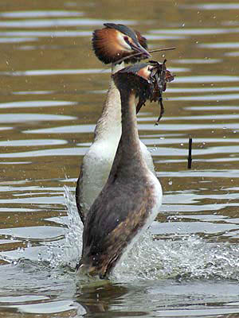

|  |  |
|
What to look for in March
After several months of small changes in the bird population usually prompted by very cold weather, comes a time when arrivals and departures are anticipated, to some extent regardless of the weather.
3 of the 6 Red-throated Diver records are from March. Great Crested Grebes can be seen displaying and this is one of the great sights to be seen at Chard.
In recent years this has been a good month to see numbers of Little Egrets. In 2017 a Cattle Egret has added to the Heron species to be seen in March.
Most of the ducks are regarded as winter visitors, but Garganey is a welcome spring visitor that can occur in very small numbers from the middle of the month.
The then record count of 200 Common Gulls in March 1970, remained a record for 46 years.
It is a good month to look and listen for the Lesser Spotted Woodpecker.
Sand Martins are often the first spring arrivals, narrowly
beating the first Chiffchaffs and can be seen from mid
month. The first Swallows may be seen from the end of
the month.

Search out the last Siskins high in the trees as they may not be seen again until December
